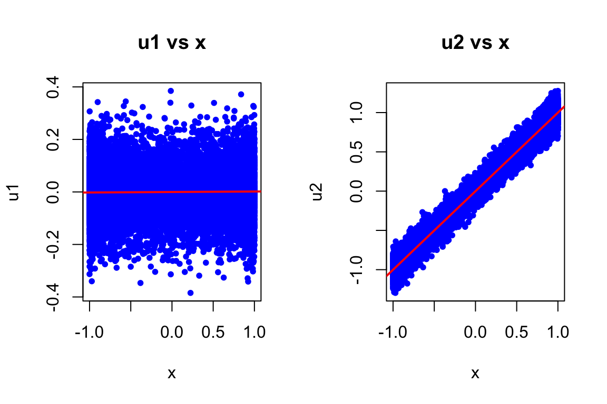
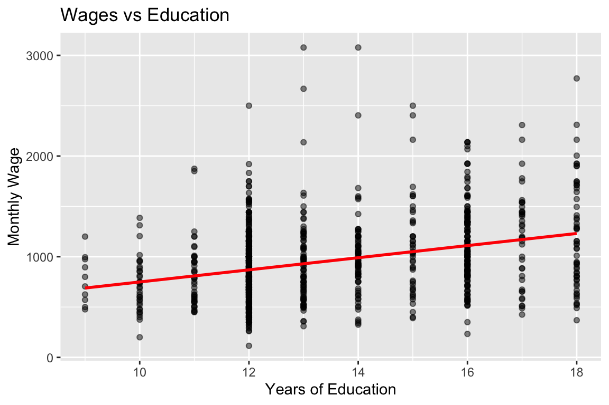
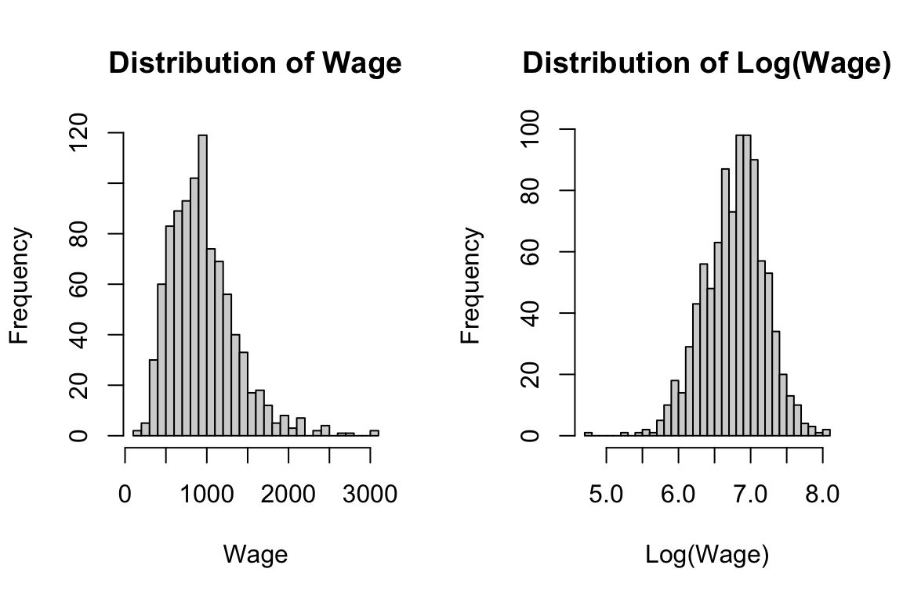
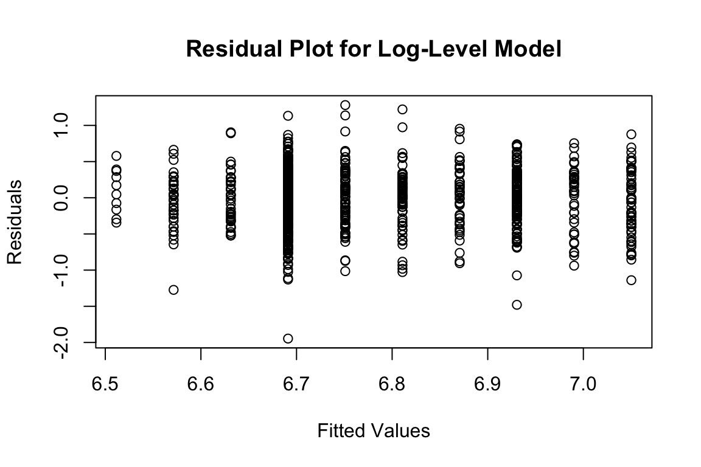

Econometrics PS 1 - Solutions
Question 1
The two population regression models of y_1 on x and y_2 on x are given by y_{1i} = 2 + 3x_{i} + u_{1i} and y_{2i} = 2 + 3x_{i} + u_{2i}. The error terms u_{1i} and u_{2i} are generated for 10000 observations as follows:
Part (a)
par(mfrow=c(1,2))
plot(x, u1, main="u1 vs x", pch=20, col="blue")
abline(lm(u1~x), col="red", lwd=2)
plot(x, u2, main="u2 vs x", pch=20, col="blue")
abline(lm(u2~x), col="red", lwd=2)
In the first population model, u_1 shows no systematic pattern with x (randomly scattered around zero). However, in the second one, u_2 exhibits a clear positive linear relationship with x, violating the zero conditional mean assumption i.e., E(u_2|x) \neq 0.
Part (b)
Only the regression of y_1 on x will produce unbiased estimates.
Proof: For unbiased OLS, we need E(u|x) = 0.
- For model 1: E(u_1|x) = 0 because u_1 is generated as N(0, 0.1) independent of x
- For model 2: E(u_2|x) = E(x + \text{rnorm}(0, 0.1)|x) = x \neq 0. This is clear from the plot in part (a) where the average of u_2 increases with x.
Since the zero conditional mean assumption is violated for model 2, OLS estimates will be biased.
Part (c)
model1 <- lm(y1 ~ x)
model2 <- lm(y2 ~ x)
results <- data.frame(
Model = c("y1 ~ x", "y2 ~ x"),
True_Beta0 = c(2, 2),
Beta0_hat = c(coef(model1)[1], coef(model2)[1]),
True_Beta1 = c(3, 3),
Beta1_hat = c(coef(model1)[2], coef(model2)[2])
)
kable(results, digits=4)| Model | True_Beta0 | Beta0_hat | True_Beta1 | Beta1_hat |
|---|---|---|---|---|
| y1 ~ x | 2 | 1.9998 | 3 | 3.0019 |
| y2 ~ x | 2 | 1.9991 | 3 | 4.0002 |
Model 1 estimates are very close to true parameters (2 and 3). Model 2’s slope estimate is biased upward (~4 instead of 3) because u_2 is positively correlated with x, causing omitted variable bias.
Not required for credit: –>
Part (d)
E(u|\text{education}) \neq 0 because ability is in the error term since it affects wages, and is correlated with education.
Since ability is positively correlated with education and affects wages positively, OLS will overestimate the true return to education leading to upward bias in the estimate of β_1 because it will give you an estimate of the return to education that confounded by the effect of ability.
\text{Cov}(\text{education}, u) > 0, leading to positive bias: E(\hat{\beta}_1) = \beta_1 + \frac{\text{Cov}(education,u)}{\text{Var}(education)} > \beta_1
Question 2
Researcher B will obtain more precise estimates of \beta_1 because al else equal, greater spread (variation) in the explanatory variable leads to more precise estimates.
Recall that: se(\hat{\beta}_1) = \widehat{\text{Var}(\hat{\beta}_1)} = \frac{\widehat{\sigma^2}}{\sum_{i=1}^n (x_i - \bar{x})^2}
Since \sigma^2 = 1 and n = 100 for both, Researcher B has much larger variation in x, resulting in larger \sum(x_i - \bar{x})^2 and therefore smaller \text{Var}(\hat{\beta}_1).
Question 3
Q 3.1
Part (a)
data(wage2)
ggplot(wage2, aes(x = educ, y = wage)) +
geom_point(alpha = 0.5) +
geom_smooth(method = "lm", se = FALSE, color = "red") +
labs(title = "Wages vs Education", x = "Years of Education", y = "Monthly Wage")
Positive relationship between education and wages. Observable heteroskedasticity (variance increases with education) and potential outliers at high wage levels.
Part (b)
# Sample correlation
rho_xy <- cor(wage2$wage, wage2$educ)
# Standard deviations
sigma_y <- sd(wage2$wage)
sigma_x <- sd(wage2$educ)
# Manual calculation of beta1
beta1_manual <- rho_xy * (sigma_y / sigma_x)
# Using lm()
model <- lm(wage ~ educ, data = wage2)
beta1_lm <- coef(model)[2]
cat("Beta1 (manual): ", round(beta1_manual, 4), "\n", "Beta1 (lm): ", round(beta1_lm, 4), "\n")Beta1 (manual): 60.2143
Beta1 (lm): 60.2143 Part (c)
summary(model)
Call:
lm(formula = wage ~ educ, data = wage2)
Residuals:
Min 1Q Median 3Q Max
-877.38 -268.63 -38.38 207.05 2148.26
Coefficients:
Estimate Std. Error t value Pr(>|t|)
(Intercept) 146.952 77.715 1.891 0.0589 .
educ 60.214 5.695 10.573 <2e-16 ***
---
Signif. codes: 0 '***' 0.001 '**' 0.01 '*' 0.05 '.' 0.1 ' ' 1
Residual standard error: 382.3 on 933 degrees of freedom
Multiple R-squared: 0.107, Adjusted R-squared: 0.106
F-statistic: 111.8 on 1 and 933 DF, p-value: < 2.2e-16- \hat{\beta}_0 = 146.95 gives the average monthly wage with zero education (not meaningful in this context as no one has zero education in the sample, and otherwise we are extrapolating). But that does not mean that we should drop it from the regression. Recall that the intercept is needed to ensure that E(u) = 0 through re-normalization.
- \hat{\beta}_1 = 60.21: Each additional year of education on average is associated with $60.21 increase in average monthly wages, all else equal.
Part (d)
# Manual calculations of Fitted values
beta0_hat <- coef(model)[1]
beta1_hat <- coef(model)[2]
y_hat <- beta0_hat + beta1_hat * wage2$educ
# Residuals
u_hat <- wage2$wage - y_hat
# residual at mean_educ, mean_wage
mean_wage <- mean(wage2$wage)
mean_educ <- mean(wage2$educ)
resid_at_mean <- mean_wage - (beta0_hat + beta1_hat * mean_educ)
# Verifications
cat("Mean of residuals: ", round(mean(u_hat), 5), "\n",
"Point (mean_educ, mean_wage): (", mean(wage2$educ), ", ", mean(wage2$wage), ")\n",
"Residual at (mean_educ, mean_wage): ", round(resid_at_mean, 5), "\n",
"Covariance(educ, residuals): ", round(cov(wage2$educ, u_hat), 10), "\n")Mean of residuals: 0
Point (mean_educ, mean_wage): ( 13.46845 , 957.9455 )
Residual at (mean_educ, mean_wage): 0
Covariance(educ, residuals): 0 While other parts are obvious, Point (mean_educ, mean_wage) lies on the regression line because the residual at that point is effectively zero.
Q 3.2
Part (a)
Call:
lm(formula = log(wage) ~ educ, data = wage2)
Residuals:
Min 1Q Median 3Q Max
-1.94620 -0.24832 0.03507 0.27440 1.28106
Coefficients:
Estimate Std. Error t value Pr(>|t|)
(Intercept) 5.973062 0.081374 73.40 <2e-16 ***
educ 0.059839 0.005963 10.04 <2e-16 ***
---
Signif. codes: 0 '***' 0.001 '**' 0.01 '*' 0.05 '.' 0.1 ' ' 1
Residual standard error: 0.4003 on 933 degrees of freedom
Multiple R-squared: 0.09742, Adjusted R-squared: 0.09645
F-statistic: 100.7 on 1 and 933 DF, p-value: < 2.2e-16Part (b)
E(\log(wage)|educ =16) - E(\log(wage)|educ =12) = 4\beta_1
beta1_log <- coef(log_model)[2]
# Exact percentage return
pct_return <- (exp(beta1_log) - 1) * 100
cat("Exact % return to one year of education: ", round(pct_return, 2), "%\n")Exact % return to one year of education: 6.17 %# avg Wage difference between 12 and 16 years
wage_diff <- (exp(beta1_log * 4) - 1) * 100
cat("% wage difference (16 vs 12 years): ", round(wage_diff, 2), "%\n")% wage difference (16 vs 12 years): 27.04 %Part (c)
par(mfrow = c(1, 2))
hist(wage2$wage, main = "Distribution of Wage", xlab = "Wage", breaks = 30)
hist(log(wage2$wage), main = "Distribution of Log(Wage)", xlab = "Log(Wage)", breaks = 30)
Log-level specification is preferred because level wage is right-skewed and log transformation helps in reducing the influence of outliers and for approximate interpretations percentage interpretation which is more intuitive for wage returns
Q 3.3
Part (a)
plot(fitted(log_model), residuals(log_model),
main = "Residual Plot for Log-Level Model",
xlab = "Fitted Values", ylab = "Residuals")
Some heteroskedasticity visible - residual spread appears to increase slightly with fitted values. Thus variance of residuals changes systematically with fitted values.
Part (b)
wage2$educ_group <- cut(wage2$educ,
breaks = c(-Inf, 12, 16, Inf),
labels = c("Low (<12)", "Medium (12-16)", "High (≥16)"),
right = FALSE)
resid <- residuals(log_model)
var_resid_group1 <- var(resid[wage2$educ_group == "Low (<12)"])
var_resid_group2 <- var(resid[wage2$educ_group == "Medium (12-16)"])
var_resid_group3 <- var(resid[wage2$educ_group == "High (≥16)"])
print(data.frame(
Education_Group = c("Low (<12)", "Medium (12-16)", "High (≥16)"),
Variance_of_Residuals = c(var_resid_group1, var_resid_group2, var_resid_group3)
)) Education_Group Variance_of_Residuals
1 Low (<12) 0.1360187
2 Medium (12-16) 0.1631016
3 High (≥16) 0.1624964# Shorter code using `tapply`:
# variance_by_group <- tapply(resid, wage2$educ_group, var)
# print(variance_by_group)Variances of the residuals differs across education groups, suggesting heteroskedasticity is present (though differences are moderate in the log specification).
Part (c)
Heteroskedasticity does not affect the unbiasedness of \hat{\beta}_1. The OLS estimator remains unbiased as long as E(u|x) = 0 holds.
Not for credit
Consequences of heteroskedasticity:
- OLS estimates remain unbiased and consistent as long as E(u|x) = 0 holds
- OLS is no longer BLUE (efficient)
- Homoskedastic Standard errors are typically underestimated
- Cosnequently, hypothesis tests and confidence intervals are invalid